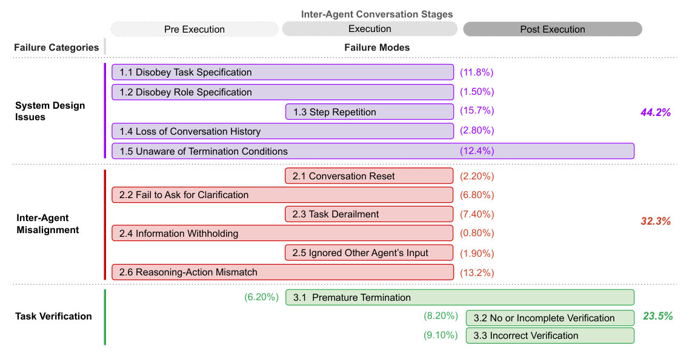
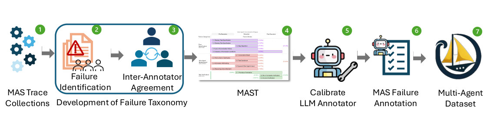
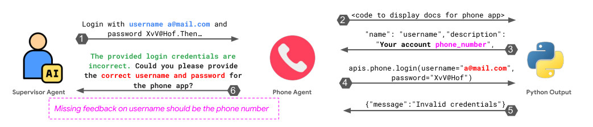
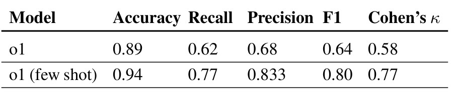
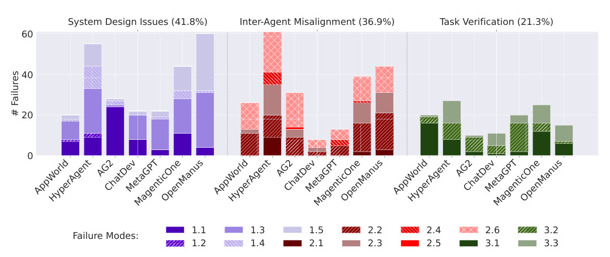
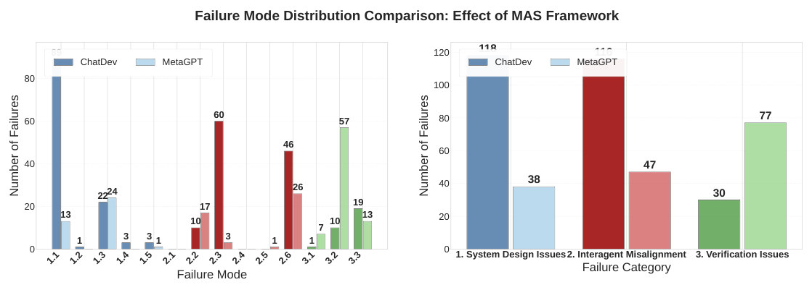
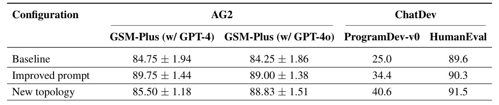
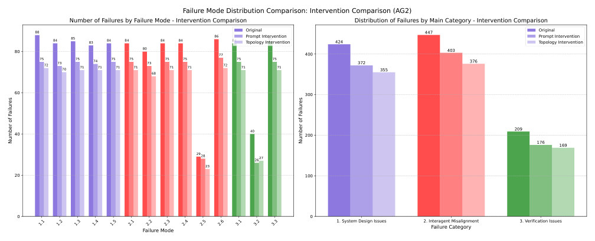
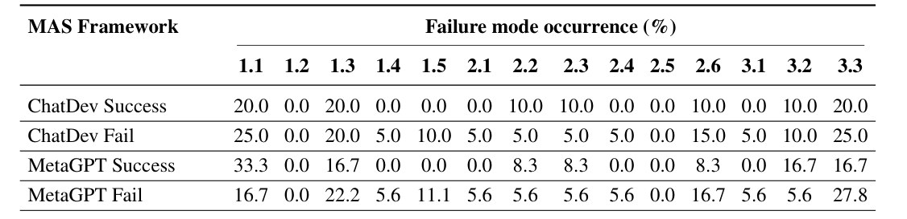

Robotic-harness · 归档于 2026-10-21
MAST
Why Do Multi-Agent LLM Systems Fail?
归档到 Robotic-harness：它给 agent harness 的 trace 提供一套失败分类（14 个 failure mode）和自动标注器，正好用来诊断我们 Runtime/Supervisor 里多个 policy 和 agent 的失败；不涉及 real-to-sim。
TL;DR
- Problem
- Multi-agent LLM system（MAS）在 benchmark 上失败率 41%–86.7%，但没人能系统地说清为什么失败。
- Idea
- 用 Grounded Theory 人工细读 150 条 trace，得到 failure taxonomy MAST（3 类 14 个 mode，κ=0.88），再用 o1 LLM-as-a-Judge 把 1642 条 trace 标成 MAST-Data。
- Result
- 失败主要来自 system design（44.2%）和 inter-agent misalignment（32.3%），不只是模型能力；只改 ChatDev 的 topology，同一个 GPT-4o 在 ProgramDev 上的成功率就从 25.0% 升到 40.6%（Table 5）。
Problem
只知道 MAS 失败了，不知道失败在哪一步、属于哪一类
Running example · 后面每个 stage 都跟着它走
ChatDev 写国际象棋：ProgramDev 任务 "Write me a two-player chess game playable in the terminal"，ChatDev（CEO / CTO / CPO / Programmer / Reviewer / Tester）+ GPT-4o → 想要：一个规则完整、能玩的终端象棋程序，以及一句"它为什么没做到"的诊断。
flowchart TD IN["例子输入
chess task → ChatDev"] --> A1["Benchmark 成功率
只看最后对不对"] A1 --> AX["只有一个数
ProgramDev 25.0%"]:::gap IN --> B1["换模型 / 改 prompt
归因于 LLM 能力"] B1 --> BX["多数失败还在
prompt 修完 34.4%"]:::gap IN --> C1["内置 verifier
Reviewer / Tester"] C1 --> CX["只查能否编译
规则 bug 漏过"]:::gap IN --> D1["单任务归因
Who&When, AGDebugger"] D1 --> DX["定位到 agent+step
没有跨系统的类别"]:::gap
| Baseline | 怎么做 | 在例子上哪里坏 | 结果 |
|---|---|---|---|
| Aggregate benchmark（SWE-bench、GAIA、ProgramDev 成功率） | 跑完只看任务对不对 | 只告诉你象棋任务失败，看不出是 CPO 提前结束、还是验证没做 | ChatDev ProgramDev-v0 25.0%（Table 5）；ChatDev 失败率 66.7%（Fig. 5） |
| 归因于模型（换 LLM、写更细的 prompt） | 把失败当成 hallucination 或不听指令 | 更明确的 prompt 下 ChatDev 仍用固定词表做 Wordle（§4）；象棋例子里加强 role prompt 后多数失败仍在 | 34.4%（Table 5，+9.4）；Claude-3.7 和 GPT-4o 的 FC3 都很高（Fig. 8） |
| 内置 verifier（ChatDev 的 Reviewer/Tester，MetaGPT 的 verifier） | 在最后做 code review、编译检查 | 象棋程序通过编译等表面检查，但不按真实规则运行，有 runtime bug（FM-3.2，§4） | 有 verifier 的系统失败更少，但成功率仍低（§4 FC3） |
| 单任务失败归因（Who&When / MAS debugger, AGDebugger） | 指出某条 trace 里是哪个 agent 在哪一步出错 | 能说"这一步错了"，但给不出跨系统统一的失败类别和定义 | 未对比（§2.3 只做文字比较） |
论文不和这些 baseline 跑同一个指标：这是一篇 dataset + taxonomy 论文。"哪里坏"一列取自 §1、§2.3、§4 和 Appendix H 的描述。象棋例子由论文里两段 ChatDev 描述拼成：CPO 不等 CEO 同意就结束对话（§1，FM-1.2），以及象棋程序过了编译却有 runtime bug（§4，FM-3.2）。论文没有说这两件事出自同一条 trace。
根本问题：MAS 的失败缠在多个 agent 的长对话里（一条 trace 平均超过 15,000 行），没有统一的定义，就无法标注、比较，也无法有针对性地修。 这篇的切入点：先从 trace 里自下而上地归纳出可复现的失败定义（MAST），再把它做成可扩展的自动标注器和数据集。
Level 1 · Big picture
MAST = 3 类 × 14 个 failure mode，按对话阶段排开，每个都有出现频率

怎么读这张图
- 顶部 "Pre Execution / Execution / Post Execution"：agent 对话的三个阶段。横条越长，说明这个 mode 能在越多阶段出现。象棋例子里，写 code 之前分配角色属于 Pre，Programmer↔Reviewer 来回属于 Execution，Tester 验收属于 Post。
- 紫色 "System Design Issues" 44.2%：1.1–1.5，问题出在系统设计和 prompt 上。例子里 CPO 不等 CEO 就结束对话是 1.2 Disobey Role Specification；对话一直不收尾是 1.5 Unaware of Termination Conditions（12.4%）。
- 红色 "Inter-Agent Misalignment" 32.3%：2.1–2.6，问题出在 agent 之间的信息流上。占比最高的是 2.6 Reasoning-Action Mismatch（13.2%）：嘴上说一件事，实际做另一件。
- 绿色 "Task Verification" 23.5%：3.1–3.3，都在 Post Execution 这一段。例子里象棋程序只做了编译检查，是 3.2 No or Incomplete Verification（8.20%）；检查了但查错了，是 3.3（9.10%）。
- 右侧每类的百分比：类内各 mode 的合计。最常见的单个 mode 是 1.3 Step Repetition（15.7%）。
flowchart LR I["MAS trace
ChatDev 象棋对话"] --> M["MAST 标注
FM-1.2, FM-3.2"] M --> P["Failure profile
FC1 多, FC3 多"] P --> O["有针对性的修复
25.0→40.6%"]:::win
Level 2 · Stages
5 个 stage：从 trace 到 taxonomy，到数据集，再到修复

怎么读这张图
- ① MAS Trace Collections：先收集 trace（5 个 MAS、150 条），象棋任务所在的 ChatDev 是其中之一。→ Stage 1
- ②③ 方框 "Development of Failure Taxonomy"：Failure Identification（Grounded Theory）加 Inter-Annotator Agreement，两者循环。→ Stage 1–2
- ④ MAST：就是 Fig. 1 那张表的缩略图。→ Stage 2 的产物
- ⑤ Calibrate LLM Annotator → ⑥ MAS Failure Annotation：o1 加 few-shot 校准后批量标注。→ Stage 3
- ⑦ Multi-Agent Dataset：MAST-Data，共 1642 条。→ Stage 4；论文还在图外加了 intervention case study → Stage 5
flowchart TD S1["1 · Grounded Theory
150 traces → 候选 modes"] --> S2["2 · IAA 定稿 MAST
3 轮, κ=0.88"] S2 --> S3["3 · LLM annotator
o1 few-shot, κ=0.77"] S3 --> S4["4 · MAST-Data 分析
1642 traces, 7 MAS"] S4 --> S5["5 · Intervention
ChatDev 25.0→40.6%"]:::win click S1 href "#stage-1" click S2 href "#stage-2" click S3 href "#stage-3" click S4 href "#stage-4" click S5 href "#stage-5"
点击 stage 展开 Level 3 细节。
Level 3 · Details
每个 stage 的细节
Stage 1 Trace 收集 + Grounded Theory 150 条 MAS trace → 一组初始 failure mode
- Why：没有现成的定义，不能先假设类别再去套，否则只会找到预设的问题。
- 选样：theoretical sampling，5 个 MAS（HyperAgent、AppWorld、AG2、ChatDev、MetaGPT）× 2 类任务（编程、数学），共 150 条 trace，每条平均超过 15,000 行文本。
- 方法（GT 四件套）：open coding 给行为贴标签 → constant comparative analysis 跨系统比较 → memoing 记录想法 → theorizing 归纳成 mode。
- 停止条件：theoretical saturation，即再看新 trace 也不出新 mode。
- 成本：6 位专家，每位超过 20 小时。
flowchart LR a["open coding
CPO 提前结束"] --> b["跨系统比较
HyperAgent 也有"] b --> c["memo + theorize
候选: 违背角色"] c --> d["saturation?"] d -->|否| a
Running example 在这一步
专家读 ChatDev 的象棋 trace，标出 "CPO 没等 CEO 达成共识就结束了讨论" 和 "Tester 只确认能编译"，和 HyperAgent、MetaGPT 里相似的行为放在一起比较，归纳成候选 mode "违背角色"和"验证不完整"。
Stage 2 Inter-Annotator Agreement → MAST 候选 mode → 14 个定义清楚的 mode（κ=0.88）
- Why：定义要让不同的人标出同样的结果，才能用来造大规模数据集。
- 每一轮：3 位专家各自独立标 5 条随机 trace → 讨论分歧 → 改定义、增加、删除或合并 mode。
- 3 轮，共 15 条 trace；光讨论分歧就用了约 10 小时。最后一轮的平均 Cohen's κ 为 0.88。
- 结果：3 个 category，14 个 mode，每个 mode 都有定义（App. A）和真实 trace 示例（App. N）。
- 区分度：3 个 category 之间的相关只有 0.17–0.32（Fig. 6）；mode 之间最高 0.63（Fig. 7），症状相近的 mode 容易混。

怎么读这张图
- ①：Supervisor Agent 让 Phone Agent 用
a@mail.com加密码登录。 - ②③：Phone Agent 去查 API 文档，文档写明 username 是 "Your account phone_number"。
- ④⑤：它仍然用 email 去登录，返回 "Invalid credentials"。
- ⑥ 和粉色虚线框：它回给 Supervisor 的是"凭证不对，请给正确的"，却没说"username 应该是手机号"。这就是 2.4 Information Withholding。Supervisor 也没追问（2.2），于是反复登录失败。
- 这说明同一个表面症状（缺信息）可能对应 2.4、2.5 或 1.4 等不同根因，所以 mode 要分得这么细（§4 FC2）。
Running example 在这一步
象棋 trace 用定稿的 MAST 标注：CPO 提前结束是 FM-1.2 Disobey Role Specification（1.50%）；Tester 只查编译是 FM-3.2 No or Incomplete Verification（8.20%）。
Stage 3 LLM-as-a-Judge annotator trace + MAST 定义 + few-shot → 每个 mode 是否出现，并附理由
- Why：人工标 1600 多条长 trace 太贵。
- How：OpenAI o1 读入 trace、MAST 定义和人工标注的 few-shot 例子，对每个 mode 输出是否出现及理由；pip 包名是
agentdash（App. C）。 - 校准：在 IAA 的 held-out trace 上，加 few-shot 后 accuracy 从 0.89 升到 0.94，κ 从 0.58 升到 0.77（Table 2）。
- 泛化检查：换成没参与建 MAST 的 2 个新 MAS（OpenManus、Magentic-One）和 2 个新 benchmark（MMLU、GAIA），人工 IAA 的 κ=0.79，定义不用改。
- 成本：平均每条 trace 约 $1.8，trace 越长越贵（AppWorld $0.37，OpenManus $4.14，Table 9）。

怎么读这张图
- 先看 Cohen's κ 一列：few-shot 是最关键的改动，0.58 → 0.77。
- Recall 0.77、Precision 0.833：仍会漏标约 1/4 的 mode，自动标注只能用来看统计趋势，不能当作逐条的真值。
flowchart LR t["trace
象棋对话"] --> j["o1 + 定义
+ few-shot"] j --> y["14 个 yes/no + 理由
1.2 ✓ 3.2 ✓"]
Running example 在这一步
象棋 trace 交给 annotator，输出 FM-1.2 = yes（"CPO ended without CEO consensus"）、FM-3.2 = yes（"only compile check"）以及一段 summary。不再需要专家逐行读完。
Stage 4 MAST-Data：跨系统、跨模型的 failure profile 1642 条已标注 trace → 每个系统和模型的失败分布
- 规模：7 个 MAS（加入 OpenManus、Magentic-One），模型有 GPT-4/4o/4o-mini、Claude-3.7-Sonnet、Qwen2.5-Coder-32B、CodeLlama-7b，任务覆盖编程、数学和通用 agent（Table 1）。另有 MAST-Data-human：21 条由 3 位专家人工标注的 trace。
- 每个系统有自己的 profile：AppWorld 多 3.1 premature termination（star topology，终止条件不明）；OpenManus 多 1.3 step repetition；HyperAgent 多 1.3 和 3.3（§5.1）。
- 换模型：同在 MetaGPT 里，GPT-4o 的 FC1 失败比 Claude-3.7 少 39%，但两者的 FC3 都高（Fig. 8）。
- 换架构：同用 GPT-4o，MetaGPT 的 FC1、FC2 比 ChatDev 少 60–68%，FC3 却是 ChatDev 的 1.56 倍（Fig. 9）。
- 致命程度不同：1.5 和 2.4 几乎只出现在失败的 run 里；3.2 和 3.3 在成功的 run 里也常见（Table 7）。
- 开源模型：Qwen2.5-Coder-32B 比 CodeLlama-7b 少很多失败，两者都多于闭源模型（Table 6）。

怎么读这张图
- 三块面板分别是 FC1 紫、FC2 红、FC3 绿；每根柱子是一个 MAS，柱内按 mode 堆叠，图例在底部。
- ChatDev 柱：FC1 和 FC2 都偏低，FC3 里主要是 3.2/3.3。象棋例子的"验证不到位"就落在这里。
- OpenManus 的 FC1 柱几乎全是浅紫色的 1.3，对应它反复执行同一步。
- 面板标题的百分比（41.8/36.9/21.3%）只针对这 210 条，和 Fig. 1 在 1642 条上的 44.2/32.3/23.5% 不同。

怎么读这张图
- 右图三组柱：ChatDev（深色）的 FC1 是 118，MetaGPT 是 38；FC3 反过来，ChatDev 30，MetaGPT 77。
- 左图 3.2 那一列：MetaGPT 有 57 次 no/incomplete verification。它用 SOP 管住了角色，却缺少 ChatDev 那样的 testing/review 阶段（App. F）。
- 结论：模型和架构都会改变失败分布，没有一种通吃的修法。
Running example 在这一步
把象棋 trace 放回 ChatDev 的整体 profile：ChatDev 在 ProgramDev 上失败率 66.7%（Fig. 5），FC1 很多（1.1 违背任务规格最多）。所以修 ChatDev 应该先管住"谁能结束对话"和"验收查什么"。
Stage 5 Intervention case study：MAST 当调试工具 failure profile → 改 prompt 或改 topology → 成功率和 MAST 分布的变化
- ChatDev，prompt 版：role-specific prompt 强化层级，只有上级 agent 能结束对话，verifier 的职责里写明要查任务相关的 edge case（App. M）。
- ChatDev，topology 版：DAG 改成 cyclic graph，只有 CTO 确认所有 review 都满足才终止，另设最大迭代次数防止死循环。
- AG2 MathChat：prompt 版加一段 verification；topology 版拆成 Problem Solver、Coder、Verifier 三个角色，只有 Verifier 能结束对话。
- 用 MAST 复查：改动前后各标一次，就能看出哪些 mode 被修掉、哪些没变（Fig. 10/11）。

怎么读这张图
- 先看 ChatDev / ProgramDev-v0 一列（象棋任务所在的 32 题集）：25.0 → 34.4（prompt）→ 40.6（topology）。
- HumanEval 本来就高：89.6 → 90.3 → 91.5，提升空间很小。
- AG2，GPT-4：prompt 版 89.75 显著；topology 版 85.50 的 Wilcoxon p=0.4，不显著。GPT-4o：两种改法都 p=0.03，显著。同一种改法的效果随模型而变。

怎么读这张图
- 右图：三色柱依次是 Original / Prompt / Topology。FC1 424 → 372 → 355，FC2 447 → 403 → 376，FC3 209 → 176 → 169。
- 左图每个 mode 都只降了一点（如 1.1 88 → 75 → 72），没有哪个被清零：tactical fix 只有有限效果。
flowchart TD b["Baseline ChatDev
25.0%"] --> p["Prompt：只有上级能结束
34.4% (+9.4)"] b --> t["Topology：CTO 确认才终止
40.6% (+15.6)"]:::win p --> r["MAST 复查
各 mode 只小降"] t --> r
Running example 在这一步
针对象棋例子里的 FM-1.2：只让上级结束对话（prompt 版）。针对 FM-3.2：改成循环结构，CTO 确认 review 全部满足才结束（topology 版）。ProgramDev-v0 上从 25.0% 升到 40.6%，但仍有约 60% 失败，所以论文说需要 structural strategies（App. G.2）。
Recap：例子覆盖了论文的哪些 idea
| 论文里的 idea | 例子里在哪体现 |
|---|---|
| Grounded Theory 自下而上归纳 | Stage 1：从象棋 trace 的具体行为归纳出"违背角色""验证不完整" |
| IAA 定稿，κ=0.88 | Stage 2：定稿后象棋 trace 标为 FM-1.2 和 FM-3.2 |
| FC1 System Design Issues | CPO 不等 CEO 就结束对话（FM-1.2） |
| FC2 Inter-Agent Misalignment | 象棋例子没有涉及；用 Fig. 3 的 Phone Agent（FM-2.4）补上 |
| FC3 Task Verification / Insight 3 多层验证 | 象棋程序只过了编译检查（FM-3.2） |
| LLM annotator（o1 few-shot，κ=0.77） | Stage 3：自动给象棋 trace 打标签和理由 |
| MAST-Data 的系统与模型 profile | Stage 4：ChatDev 与 MetaGPT 的对比、GPT-4o 与 Claude 的对比 |
| Insight 1：系统设计比模型重要 | Stage 5：同一个 GPT-4o，只改 topology 就有 +15.6 |
| MAST 当调试工具；tactical fix 有限 | Stage 5：Fig. 11 显示各 mode 都只小降 |
Results
结果一览
- 41%–86.7%：6 个 MAS 在各自 benchmark 上的失败率（Fig. 5；AG2 41.0%，AppWorld 86.7%，不同 benchmark 之间不可直接比较）。
- 44.2% / 32.3% / 23.5%：1642 条 trace 中 FC1 / FC2 / FC3 的占比（Fig. 1）。
- κ = 0.88：人工 IAA；0.79：换到新 MAS 和新 benchmark；0.77：o1 few-shot annotator 对人工（Table 2）。
- +9.4 / +15.6：ChatDev 在 ProgramDev-v0 上 prompt 与 topology 两种改法的提升（25.0 → 34.4 / 40.6，Table 5）。
- 39%：MetaGPT 里 GPT-4o 比 Claude-3.7 少的 FC1 失败；1.56×：MetaGPT 相对 ChatDev 的 FC3 失败倍数（§5.1）。
- 越难越多：AG2 + GPT-4o 平均每条 trace 的 FC1 失败数，GSM 0.53，Olympiad 1.19（Table 8）。

Limits
局限和开放问题
- 作者自己说 MAST 不完整；mode 之间相关最高 0.63（Fig. 7），自动标注容易把症状相近的 mode 混在一起。
- annotator recall 只有 0.77，MAST-Data 的大部分标签是 LLM 标的，适合看统计，不能当作逐条真值。
- 任务以编程和数学为主，通用 agent 只有 GAIA；没有具身或机器人类任务。
- 各 MAS 跑的 benchmark 不同，profile 不能横向比较好坏（Fig. 4、Fig. 5 的说明）。
- intervention 只试了 tactical 改法，提升有限；structural strategies（标准化通信协议、confidence、memory、RL）只是提议（App. G.2），没有实验。
- 数字有小出入：FM-2.4 在 Fig. 1 是 0.80%，正文是 0.85%；Fig. 11 的图内标题写成了 AG2。
For Robotic-harness
对我们有什么用
- 给 Runtime 的 trace 打 MAST 标签：Native API、Codex、Claude Code 三种 policy 在 RoboTwin/LIBERO 上的失败，可以像 Fig. 8/9 那样按 FC1/2/3 出 profile，比较"换 policy"和"换 harness 结构"各自改变了什么，而不只看成功率。
agentdash平均约 $1.8/trace，可以直接试。 - Supervisor 就是论文的 topology fix：ChatDev 最大的提升来自"只有 CTO 确认 review 全部满足才终止"（+15.6）。这和我们由 Supervisor 掌管 admission 和 evidence 是同一思路。Insight 3 提醒：admission 要查任务目标（物体是否真的到位），不能只查低层（动作执行了、代码跑了）。
- 先防"致命"mode：1.5 Unaware of Termination 和 2.4 Information Withholding 几乎只出现在失败 run（Table 7）。对机器人来说，就是不知道何时停，以及子 agent 不上报关键观测（例如抓取失败）。值得在 Supervisor 里做显式检查。